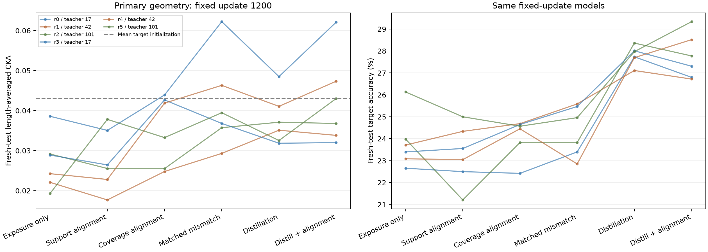

未同时得到正确对齐相对普通曝光、只对齐原标签集、预测答案错配的三个教师簇一致正优势。增加输入覆盖是否形成关系特异的可推广对齐，仍不能直接确认。单个平均CKA上升不能代替全部对照。 正确对齐相对普通曝光的平均准确率差为 +0.27 个百分点；功能收益须结合逐次差值和输出蒸馏对照判断。
主要端点固定1200步；新测试共2560例。每长度128例CKA，五长度等权。六次配对重复复用上一轮标签与初始化，并非六次新的源模型训练。先看几何，再看同一模型的准确率；没有根据本测试选择权重、预算或任务。

| 条件 | 无标签池CKA | 新测试CKA | 答案均值去除后关系CKA差 | 新测试准确率 | 验证选定准确率 |
|---|---|---|---|---|---|
| 普通训练＋输入曝光 | 0.0264 | 0.0270 | +0.0137 | 23.83% | 23.85% |
| 只对齐原标签集 | 0.0245 | 0.0276 | +0.0097 | 23.27% | 22.78% |
| 扩大覆盖的正确对齐 | 0.1627 | 0.0353 | +0.0243 | 24.10% | 23.76% |
| 扩大覆盖的预测答案错配 | 0.1652 | 0.0416 | +0.0243 | 24.35% | 24.13% |
| 扩大覆盖的输出蒸馏 | 0.0597 | 0.0377 | +0.0229 | 27.81% | 27.47% |
| 扩大覆盖的蒸馏＋正确对齐 | 0.0999 | 0.0425 | +0.0275 | 27.74% | 27.45% |
几何差值是CKA单位；准确率差值是百分点。所列区间为3³次教师簇经验bootstrap的描述性95%区间。完整6⁶次条件区间与所有逐次差值见下方及summary.json。共享历史数据世界和仅三个教师限制了外推；未作多重比较校正。
| 比较 | CKA均值差 | CKA正重复 | 教师簇区间 | 准确率均值差 | 准确率正重复 | 教师簇区间 |
|---|---|---|---|---|---|---|
| 扩大覆盖的正确对齐 − 普通训练＋输入曝光 | +0.0083 | 5/6 | +0.0061 至 +0.0100 | +0.27 | 3/6 | -0.56 至 +1.03 |
| 扩大覆盖的正确对齐 − 只对齐原标签集 | +0.0078 | 4/6 | +0.0009 至 +0.0130 | +0.83 | 4/6 | +0.59 至 +1.05 |
| 扩大覆盖的正确对齐 − 扩大覆盖的预测答案错配 | -0.0063 | 1/6 | -0.0078 至 -0.0049 | -0.25 | 1/6 | -0.75 至 +0.23 |
| 扩大覆盖的蒸馏＋正确对齐 − 扩大覆盖的输出蒸馏 | +0.0048 | 4/6 | +0.0031 至 +0.0065 | -0.07 | 2/6 | -0.60 至 +0.35 |
| 重复 | 普通训练＋输入曝光 | 只对齐原标签集 | 扩大覆盖的正确对齐 | 扩大覆盖的预测答案错配 | 扩大覆盖的输出蒸馏 | 扩大覆盖的蒸馏＋正确对齐 |
|---|---|---|---|---|---|---|
| r0 / 教师 17 | 0.0386 | 0.0351 | 0.0439 | 0.0622 | 0.0485 | 0.0621 |
| r1 / 教师 42 | 0.0221 | 0.0177 | 0.0248 | 0.0293 | 0.0351 | 0.0338 |
| r2 / 教师 101 | 0.0292 | 0.0255 | 0.0255 | 0.0357 | 0.0371 | 0.0368 |
| r3 / 教师 17 | 0.0289 | 0.0264 | 0.0427 | 0.0368 | 0.0318 | 0.0320 |
| r4 / 教师 42 | 0.0242 | 0.0228 | 0.0419 | 0.0463 | 0.0411 | 0.0473 |
| r5 / 教师 101 | 0.0193 | 0.0378 | 0.0333 | 0.0395 | 0.0325 | 0.0430 |
| 重复 | 普通训练＋输入曝光 | 只对齐原标签集 | 扩大覆盖的正确对齐 | 扩大覆盖的预测答案错配 | 扩大覆盖的输出蒸馏 | 扩大覆盖的蒸馏＋正确对齐 |
|---|---|---|---|---|---|---|
| r0 / 教师 17 | 22.66% | 22.50% | 22.42% | 23.40% | 27.73% | 26.80% |
| r1 / 教师 42 | 23.71% | 24.34% | 24.69% | 25.59% | 27.11% | 26.72% |
| r2 / 教师 101 | 23.98% | 21.21% | 23.83% | 23.83% | 28.36% | 27.77% |
| r3 / 教师 17 | 23.40% | 23.55% | 24.65% | 25.47% | 28.01% | 27.30% |
| r4 / 教师 42 | 23.09% | 23.05% | 24.45% | 22.85% | 27.70% | 28.52% |
| r5 / 教师 101 | 26.13% | 25.00% | 24.57% | 24.96% | 27.97% | 29.34% |
原覆盖条件使用至多64行几何批次，标签对齐使用至多32行。额外六次拟合逐步使用与标签对齐完全相同的几何行数，但换成无标签池输入；初始化、64行前向、标签、批次顺序和更新预算不变。该控制在基础测试开始计算后、代理查看数值结果前，基于代码审查登记；不是原六条件预注册的一部分。
固定1200步的无标签行数匹配控制，新测试CKA为 0.0292，准确率为 23.77%。相对标签对齐，CKA差为 +0.0016（4/6为正），准确率差为 +0.49 个百分点。主六条件36模型与该补充6模型分别报告，总计42模型。
完整行数匹配控制 · 登记及时间顺序 · 全部配对统计 · 18验证候选与12测试端点核验
数学规则 recoils(x)=descents(x⁻¹) 由实验给出。每次沿用192个训练和64个验证目标标签及原随机初始化；新增4096个无标签排列，真实答案未生成或用于训练。各条件每步看到同长度的32个标签输入和32个无标签输入，均训练1200步，使用同一批次顺序、随机种子、优化器与学习率。
普通曝光的新输入损失权重为零，计算这些输入本身不构成学习目标。“只对齐原标签集”也计算新输入，但几何梯度仅来自标签批次；扩大覆盖条件在合格的合并批次施加1−线性CKA，固定权重0.3。蒸馏对合并批次使用教师完整输出、温度2、权重1。所有损失项在所有条件都计算，按固定条件赋权。
错配在原标签集按真实答案＋长度匹配，在无标签池按冻结教师预测答案＋长度匹配；单例在所有覆盖几何条件共同排除。教师输出属于新增的预训练源知识，输出蒸馏会提供伪监督；标签预算不变不能理解为有效监督信息完全不变。预测答案匹配控制也不能单独排除全部输出信息。
| 重复 | 独立新输入已曝光 | 可用新输入 | 标签前向次数 | 无标签前向次数 |
|---|---|---|---|---|
| r0 | 4096 | 4096 | 38400 | 38400 |
| r1 | 4095 | 4096 | 38400 | 38400 |
| r2 | 4096 | 4096 | 38400 | 38400 |
| r3 | 4096 | 4096 | 38400 | 38400 |
| r4 | 4096 | 4096 | 38400 | 38400 |
| r5 | 4096 | 4096 | 38400 | 38400 |
同一次重复中六种条件具有相同初始化、输入及曝光数。原标签/验证集是复用数据；新池与新测试完整八状态轨道与所有原始1600万条输入、530040个旧本地输入及其他新队列分离。
| 源种子 | 总体 | 10 | 15 | 20 | 25 | 30 |
|---|---|---|---|---|---|---|
| 17 | 99.77% | 100.00% | 100.00% | 100.00% | 100.00% | 98.83% |
| 42 | 99.92% | 100.00% | 100.00% | 100.00% | 100.00% | 99.61% |
| 101 | 100.00% | 100.00% | 100.00% | 100.00% | 100.00% | 100.00% |
源模型在本轮没有再训练，原独立可靠性审计已通过。新测试源成绩在全部目标拟合结束后才计算；没有据此筛选来源或调整方案。
主结果揭晓后追加，不属于预注册主要比较。只用192训练标签估计各长度最常见答案，平均准确率为 26.23%；只用4096无标签输入的教师预测估计各长度众数，为 29.40%。预测不依赖排列内容，也不使用验证或测试答案拟合。它们限制了将蒸馏相对普通神经训练的增益解释为输入相关数学规律学习的结论，不能证明模型完全没有输入信息。
完整长度先验诊断 · 事后范围 · 独立计数核验与全部重复
初始化的新测试CKA均值为 0.0430。答案匹配/去均值操作只在测试测量中使用真实答案，保留至少3例的共同答案层；这不会向训练提供真实无标签答案，也不会消除全部输出信息。无标签池CKA与新测试CKA均每长度128例，避免样本数不同导致的CKA比较误读。验证选定端点固定使用原64个验证标签，不选择CKA；全部结果保留在geometry.json和summary.json。
{
"status": "passed",
"completed_utc": "2026-10-07T05:27:27.463967+00:00",
"data": {
"new_examples": 27136,
"new_orbit_states_checked": 217088,
"original_inputs_rescanned": 16000000,
"prior_local_inputs_rechecked": 530040,
"unlabeled_archives_have_no_oracle_answers": true,
"unlabeled_oracle_answers_computed_by_verifier": false
},
"budget_controls": {
"schedules_recreated": 6,
"labeled_schedules_match_previous_study": true,
"all_36_exposures_and_initializations_matched": true,
"distinct_unlabeled_exposed": {
"r0": 4096,
"r1": 4095,
"r2": 4096,
"r3": 4096,
"r4": 4096,
"r5": 4096
},
"teacher_predicted_answer_mismatch_preserves_length_and_prediction": true
},
"accuracy_endpoints_checked": 72,
"validation_candidates_replayed": 108,
"maximum_original_model_replay_error": 1.0967254638671875e-05,
"source_checkpoint_hashes_verified": 3,
"all_training_finished_before_test_opening": true,
"analysis_registered_before_test": true,
"independent_gram_scores": 2340,
"maximum_gram_covariance_error": 1.6653345369377348e-16,
"bootstrap_bounds_independently_checked": 96,
"maximum_bootstrap_bound_error": 0.0
}主规则与注册时间 · 分析规则 · 数据审计 · 全部配对统计 · 逐次逐长度几何 · 独立核验 · 完成与哈希清单 · 可导出图PDF
OPENBLAS_NUM_THREADS=2 .venv/bin/python -m experiments.inverse_alignment_coverage train OPENBLAS_NUM_THREADS=2 .venv/bin/python -m experiments.inverse_alignment_coverage evaluate OPENBLAS_NUM_THREADS=2 .venv/bin/python -m experiments.inverse_coverage_analysis analyze OPENBLAS_NUM_THREADS=2 .venv/bin/python -m experiments.inverse_coverage_verify OPENBLAS_NUM_THREADS=2 .venv/bin/python -m experiments.inverse_coverage_analysis report OPENBLAS_NUM_THREADS=2 .venv/bin/python -m experiments.inverse_coverage_finalize